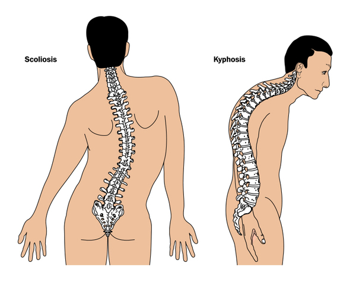

Achondroplasia

CAUSES
During early fetal development, much of your skeleton is made up of cartilage. Normally, most cartilage eventually converts to bone. However, if you have achondroplasia, a lot of the cartilage doesn’t convert to bone. This is caused by mutations in the FGFR3 gene.
The FGFR3 gene instructs your body to make a protein necessary for bone growth and maintenance. Mutations in the FGFR3 gene cause the protein to be overactive. This interferes with normal skeletal development.
SYMPTOMS
Symptoms include:
- a short stature that’s significantly below average for age and sex.
- short arms and legs, especially the upper arms and thighs, in comparison to body height.
- short fingers in which the ring and middle fingers may also point away from each other.
- a disproportionately large head compared to the body
an abnormally large, prominent forehead.
- an underdeveloped area of the face between the forehead and upper jaw.
DIAGNOSIS
Your doctor may diagnose your child with achondroplasia while you’re pregnant or after your infant is born.
- Diagnosis during pregnancy
- Some characteristics of achondroplasia are detectable during an ultrasound. These include hydrocephalus, or an abnormally large head. If your doctor suspects achondroplasia, genetic tests may be ordered. These tests look for the defective FGFR3 gene in a sample of amniotic fluid, which is the fluid that surrounds the fetus in the womb.
- Diagnosis after your child is born
- Your doctor can diagnose your child by looking at his or her features. The doctor may also order X-rays to measure the length of your infant’s bones. This can help confirm a diagnosis. Blood tests may also be ordered to look for the defective FGFR3 gene.
TREATMENTS
There’s no cure or specific treatment for achondroplasia. If any complications arise, then your doctor will address those issues. For instance, antibiotics are given for ear infections and surgery may be performed in severe cases of spinal stenosis.
Some doctors use growth hormones to increase the growth rate of a child’s bones. However, their long-term effects on height haven’t been determined and are thought to be modest at best.